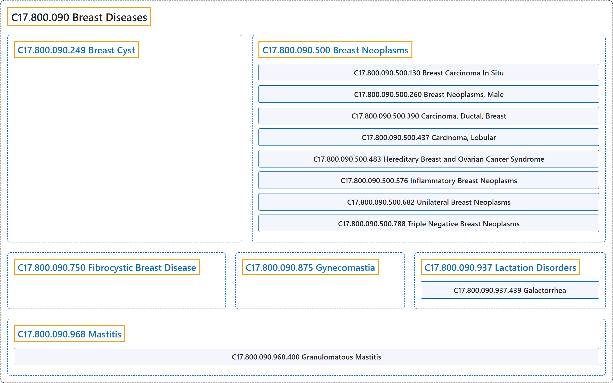

C17.800.090 Breast Diseases
Classification

Glossary
| Term | Definition | 中文翻译 | Source |
|---|---|---|---|
| C17.800.090 Breast Diseases 乳腺疾病 |
"Pathological processes of the BREAST." | 乳房的病理过程（BREAST）。 | National Library of Medicine, 2026, "Breast Diseases" scope note |
| C17.800.090.249 Breast Cyst 乳腺囊肿 |
"A fluid-filled closed cavity or sac that is lined by an EPITHELIUM and found in the BREAST. It may appear as a single large cyst in one breast, multifocal, or bilateral in FIBROCYSTIC BREAST DISEASE." | 一种充满液体的封闭腔或囊，内衬上皮（EPITHELIUM），见于乳房（BREAST）。可表现为一侧乳房单个大囊肿、多灶性，或在乳腺纤维囊性病（FIBROCYSTIC BREAST DISEASE）中为双侧性。 | National Library of Medicine, 2026, "Breast Cyst" scope note |
| C17.800.090.500 Breast Neoplasms 乳腺肿瘤 |
"Tumors or cancer of the human BREAST." | 人类乳房（BREAST）的肿瘤或癌。 | National Library of Medicine, 2026, "Breast Neoplasms" scope note |
| C17.800.090.500.130 Breast Carcinoma In Situ 乳腺原位癌 |
"A condition in which abnormal cells have not spread outside the duct, lobule, or nipple to other tissues of the breast. There are 3 types of breast carcinoma in situ: DUCTAL CARCINOMA IN SITU; LOBULAR CARCINOMA IN SITU; and PAGET DISEASE OF THE NIPPLE." | 一种异常细胞尚未扩散到导管、小叶或乳头之外、未累及乳房其他组织的病症。乳腺原位癌有 3 种类型：导管原位癌（DUCTAL CARCINOMA IN SITU）、小叶原位癌（LOBULAR CARCINOMA IN SITU）和乳头佩吉特病（PAGET DISEASE OF THE NIPPLE）。 | National Library of Medicine, 2026, "Breast Carcinoma In Situ" scope note |
| C17.800.090.500.260 Breast Neoplasms, Male 男性乳腺肿瘤 |
"Any neoplasms of the male breast. These occur infrequently in males in developed countries, the incidence being about 1% of that in females." | 男性乳腺的任何肿瘤。在发达国家男性中少见，发病率约为女性的 1%。 | National Library of Medicine, 2026, "Breast Neoplasms, Male" scope note |
| C17.800.090.500.390 Carcinoma, Ductal, Breast 乳腺导管癌 |
"An invasive (infiltrating) CARCINOMA of the mammary ductal system (MAMMARY GLANDS) in the human BREAST." | 人类乳房（BREAST）中乳腺导管系统（MAMMARY GLANDS）的浸润性癌（CARCINOMA）。 | National Library of Medicine, 2026, "Carcinoma, Ductal, Breast" scope note |
| C17.800.090.500.437 Carcinoma, Lobular 小叶癌 |
"A type of BREAST CANCER where the abnormal malignant cells form in the lobules, or milk-producing glands, of the breast." | 一种乳腺癌（BREAST CANCER），其异常恶性细胞形成于乳腺小叶（即产乳腺体）中。 | National Library of Medicine, 2026, "Carcinoma, Lobular" scope note |
| C17.800.090.500.483 Hereditary Breast and Ovarian Cancer Syndrome 遗传性乳腺癌卵巢癌综合征 |
"Autosomal dominant HEREDITARY CANCER SYNDROME in which a mutation most often in either BRCA1 or BRCA2 is associated with a significantly increased risk for breast and ovarian cancers." | 一种常染色体显性遗传性癌症综合征（HEREDITARY CANCER SYNDROME），其中最常见于 BRCA1 或 BRCA2 的突变与乳腺癌和卵巢癌风险显著增加相关。 | National Library of Medicine, 2026, "Hereditary Breast and Ovarian Cancer Syndrome" scope note |
| C17.800.090.500.576 Inflammatory Breast Neoplasms 炎性乳腺肿瘤 |
"Metastatic breast cancer characterized by EDEMA and ERYTHEMA of the affected breast due to LYMPHATIC METASTASIS and eventual obstruction of LYMPHATIC VESSELS by the cancer cells." | 一种以受累乳房水肿（EDEMA）和红斑（ERYTHEMA）为特征的转移性乳腺癌，由淋巴转移（LYMPHATIC METASTASIS）及癌细胞最终阻塞淋巴管（LYMPHATIC VESSELS）所致。 | National Library of Medicine, 2026, "Inflammatory Breast Neoplasms" scope note |
| C17.800.090.500.682 Unilateral Breast Neoplasms 单侧乳腺肿瘤 |
"Tumors or cancer found specifically in one human BREAST, but not in both." | 仅见于一侧人类乳房（BREAST）的肿瘤或癌，而非双侧。 | National Library of Medicine, 2026, "Unilateral Breast Neoplasms" scope note |
| C17.800.090.500.788 Triple Negative Breast Neoplasms 三阴性乳腺肿瘤 |
"Breast neoplasms that do not express ESTROGEN RECEPTORS; PROGESTERONE RECEPTORS; and do not overexpress the NEU RECEPTOR/HER-2 PROTO-ONCOGENE PROTEIN." | 不表达雌激素受体（ESTROGEN RECEPTORS）、孕激素受体（PROGESTERONE RECEPTORS），且不过度表达 NEU 受体/HER-2 原癌基因蛋白（NEU RECEPTOR/HER-2 PROTO-ONCOGENE PROTEIN）的乳腺肿瘤。 | National Library of Medicine, 2026, "Triple Negative Breast Neoplasms" scope note |
| C17.800.090.750 Fibrocystic Breast Disease 乳腺纤维囊性病 |
"A common and benign breast disease characterized by varying degree of fibrocystic changes in the breast tissue. There are three major patterns of morphological changes, including FIBROSIS, formation of CYSTS, and proliferation of glandular tissue (adenosis). The fibrocystic breast has a dense irregular, lumpy, bumpy consistency." | 一种常见的良性乳腺疾病，特征为乳腺组织中不同程度的纤维囊性改变。形态学改变有三种主要模式，包括纤维化（FIBROSIS）、囊肿（CYSTS）形成和腺组织增生（腺病）。纤维囊性乳房质地致密、不规则、呈团块状和凹凸不平。 | National Library of Medicine, 2026, "Fibrocystic Breast Disease" scope note |
| C17.800.090.875 Gynecomastia 男子乳腺发育 |
"Enlargement of the BREAST in the males, caused by an excess of ESTROGENS. Physiological gynecomastia is normally observed in NEWBORNS; ADOLESCENT; and AGING males." | 男性乳房（BREAST）增大，由雌激素（ESTROGENS）过多引起。生理性男子乳腺发育通常见于新生儿（NEWBORNS）、青春期（ADOLESCENT）和老年（AGING）男性。 | National Library of Medicine, 2026, "Gynecomastia" scope note |
| C17.800.090.937 Lactation Disorders 泌乳障碍 |
"Disturbances of MILK secretion in either SEX, not necessarily related to PREGNANCY." | 任一性别（SEX）的乳汁（MILK）分泌紊乱，不一定与妊娠（PREGNANCY）有关。 | National Library of Medicine, 2026, "Lactation Disorders" scope note |
| C17.800.090.937.439 Galactorrhea 溢乳 |
"Excessive or inappropriate LACTATION in females or males, and not necessarily related to PREGNANCY. Galactorrhea can occur either unilaterally or bilaterally, and be profuse or sparse. Its most common cause is HYPERPROLACTINEMIA." | 女性或男性过度或不适当的泌乳（LACTATION），且不一定与妊娠（PREGNANCY）有关。溢乳可为单侧或双侧，量可多可少。其最常见原因是高催乳素血症（HYPERPROLACTINEMIA）。 | National Library of Medicine, 2026, "Galactorrhea" scope note |
| C17.800.090.937.439.500 Chiari-Frommel Syndrome 希-弗综合征 |
"A POSTPARTUM condition consists of persistent lactation (GALACTORRHEA) and AMENORRHEA in patients not BREAST FEEDING." | 一种产后（POSTPARTUM）病症，表现为未进行母乳喂养（BREAST FEEDING）的患者出现持续泌乳（GALACTORRHEA）和闭经（AMENORRHEA）。 | National Library of Medicine, 2026, "Chiari-Frommel Syndrome" scope note |
| C17.800.090.968 Mastitis 乳腺炎 |
"INFLAMMATION of the BREAST, or MAMMARY GLAND." | 乳房（BREAST）的炎症（INFLAMMATION），或乳腺（MAMMARY GLAND）的炎症。 | National Library of Medicine, 2026, "Mastitis" scope note |
| C17.800.090.968.400 Granulomatous Mastitis 肉芽肿性乳腺炎 |
"A rare, benign, inflammatory breast disease occurring in premenopausal women shortly after a recent pregnancy. The origin is unknown but it is commonly mistaken for malignancy and sometimes associated with BREAST FEEDING and the use of ORAL CONTRACEPTIVES." | 一种罕见的良性炎症性乳腺疾病，发生于近期妊娠后不久的绝经前女性。其起源不明，但常被误认为恶性肿瘤，有时与母乳喂养（BREAST FEEDING）和口服避孕药（ORAL CONTRACEPTIVES）的使用有关。 | National Library of Medicine, 2026, "Granulomatous Mastitis" scope note |
References
National Library of Medicine. (2026). MeSH 2026 descriptor records [Data set]. Retrieved October 28, 2026, from https://www.nlm.nih.gov/databases/download/mesh.html